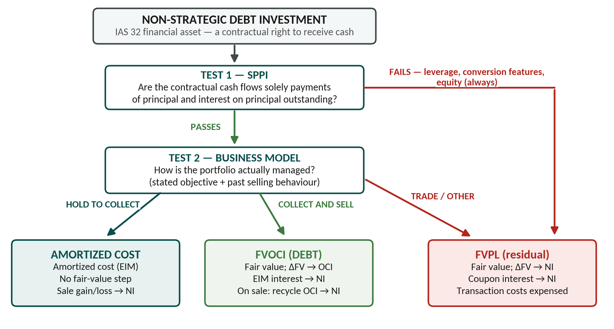
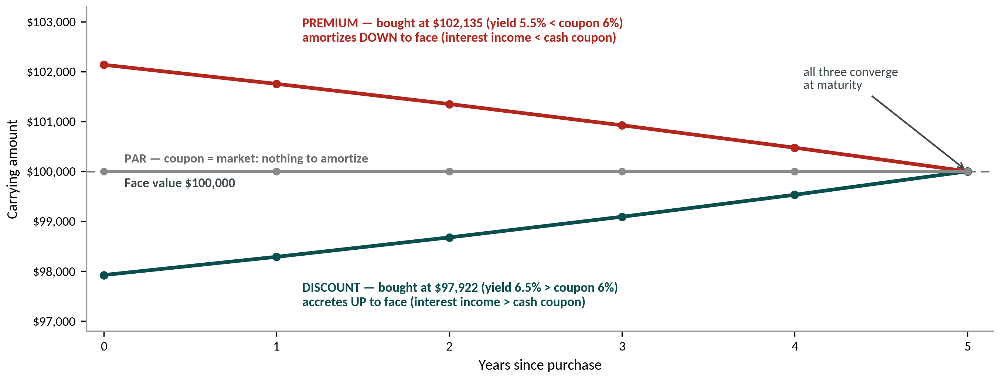

Amortised cost, fair value through profit or loss, and fair value through other comprehensive income: three measurement categories and the entries each one forces.
IFRS 9Amortised costFVOCIWeek 8
HOW TO USE THIS DOCUMENT First pass (deep learning): read straight through, prose included. The order is deliberate — classification first, then the simplest possible bond (Terrace, at par) to see why classification matters, and only then the amortization machinery. Daily review: re-read only the EXAM TRAP and KEY RULE boxes and the tables. Target: under 15 minutes. Case work: the Tracking Systems Ltd. PBL maps onto Sections 2, 4–6 and 8; use the companion Case Application Guide (V4) and keep the Quick Reference PDF open beside the case. Week 8 arc: the course runs prepare (three pre-lecture decks: initial recognition → interest income → classification) → demonstrate (Robson Engineering in lecture; Terrace Co. in the textbook) → apply (the TSL PBL). This document follows the same arc, so every worked pattern appears exactly where the concept does. Callout hierarchy (used across Weeks 6–8): EXAM TRAP (red) = errors that are specifically marked · KEY RULE (teal) = the rule you must be able to state · WHY IT MATTERS (green) = the rationale markers reward · thin-rule notes = scope and context.
TESTABLE SCOPE Week 8 in: non-strategic debt classification (Amortized Cost / FVOCI / FVPL) via the two-part test (business model + SPPI), including the judgment call when the signals conflict; bond pricing (par / discount / premium) and initial measurement incl. transaction costs; the effective interest method and continuity schedules; FVOCI dual-layer mechanics; interest income recognition; disposition incl. FVOCI recycling; IFRS 18 / IAS 7 cash-flow changes; high-level debt impairment (expected vs incurred loss; 12-month vs lifetime ECL as a concept only); IFRS vs ASPE. Out (Week 7 material — don’t re-derive it here): significant influence and equity-method mechanics; the equity OCI election; AR provision matrices. The only equity that appears this week is a plain FVPL trading holding (TSL’s BSS shares), because equity fails SPPI and can never reach AC/FVOCI. Also out: full ECL modelling, reclassifications, factoring/derecognition mechanics.
1. The Week 8 Framework: Same Eight Issues, Debt Instruments
Week 8 runs the same eight-question framework from Week 7 down the debt side of IFRS 9. The instrument changed (bonds, not shares); the questions did not.
First, the definition. IAS 32: a financial asset is (a) cash; (b) an equity instrument of another entity; or (c) a contractual right to receive cash or another financial asset. A bond or note lands squarely in limb (c): periodic interest plus principal at maturity, both fixed by contract. That contractual, cash-only nature is exactly what lets debt — and only debt — pass the SPPI test and reach Amortized Cost or FVOCI.
#
Reporting issue
Where Week 8 answers it
1
Is it a financial asset?
IAS 32 — debt = a contractual right to receive cash (above)
2
Classification
Two-part test → Amortized Cost / FVOCI / FVPL (§2); why it matters — Terrace (§3)
3
Initial recognition & measurement
PV at the market rate; transaction costs split by class (§4)
Gain/loss basis differs by class — Terrace sale (§7)
8
Cash flow statement impact
IFRS 18 / IAS 7 amendments (§8)
WHY IT MATTERS Classification is the hinge. One bond, held under three different business models, produces three different carrying amounts, three different income statements, and three different disposal gains. Pin classification correctly and the rest is mechanical; get it wrong and every downstream number is wrong.
KEY RULE If a SHARE ever reaches Amortized Cost or FVOCI-debt in your answer, you have made a classification error. Equity has no principal and no contractual interest — it fails SPPI by definition and defaults to FVPL (Week 7’s irrevocable OCI election is the only alternative, and it is a different category from FVOCI-debt).
2. Classification: The Two-Part Test → AC / FVOCI / FVPL — and the Judgment Call
2.1 The two-part test (both parts must pass)
IFRS 9 4.1.1 classifies on the basis of both: (a) the entity’s business model for managing the asset, and (b) the asset’s contractual cash flow characteristics (the SPPI test). One is about the holder’s intent, the other about the instrument’s terms — state both rulings in every case.
Test
Question it answers
Passing condition
Business model
What does the entity intend to DO with the asset?
Hold to collect · hold to collect and sell · trade
SPPI
Are cash flows Solely Payments of Principal and Interest?
Cash flows = principal + interest on principal outstanding, nothing else
2.2 The three categories
Business model
Passes SPPI?
Classification
Subsequent measurement
Hold to collect (only)
Yes
Amortized Cost
Amortized cost (effective interest method)
Hold to collect AND sell
Yes
FVOCI
Fair value; changes → OCI
Trade / realize value — OR fails SPPI
No / n.a.
FVPL
Fair value; changes → net income

The Week 8 master map (course Exhibit 7-7, redrawn). Every classification answer walks this figure top to bottom — cite one case fact at each branch.
EXAM TRAP The two tests are independent — do not let one masquerade as the other. “Hold to collect” is a business-model conclusion; “solely principal and interest” is a contractual-terms conclusion. A vanilla fixed-rate bond passes SPPI regardless of why it is held; the business model then decides AC vs FVOCI. Stating only one ruling loses marks.
2.3 The business-model call: stated policy vs actual behaviour (Robson Engineering)
The business-model test is an evidence test, not a label test. An entity does not get Amortized Cost by writing “hold to collect” in a policy manual; it gets it by actually managing the portfolio that way. When a case gives you mixed signals, weigh three kinds of evidence:
Evidence
What to look for
Typical case phrasing
Stated objective
Why does the entity say it holds the portfolio?
“held to maturity to finance construction in five years”
Actual behaviour
Has the entity sold out of this portfolio before — how often and why?
“has historically sold investments in this portfolio”
How value is realized
Does the entity realize value through the contractual coupons, or through selling for profit?
“will also sell investments held in this portfolio for profit purposes”
The lecture’s Robson Engineering Ltd. facts are built exactly on this tension — one hold-to-collect signal against two collect-and-sell signals for the same Hydro One bond portfolio:
Pulls toward Amortized Cost
Pulls toward FVOCI
“The objective is to hold the investments to maturity in order to provide an annual cash inflow that supports operating activities.”
“Will also sell investments held in this portfolio for profit purposes.” · “Has historically sold investments in this portfolio.”
Ruling: FVOCI. Selling for profit is a stated, evidenced, recurring part of how the portfolio is managed — so the objective is achieved both by collecting contractual cash flows and by selling. SPPI passes (vanilla fixed-rate bond), so the collect-and-sell model lands on FVOCI, not FVPL.
KEY RULE A “hold to collect” conclusion must survive the behaviour evidence. A stated hold-to-maturity objective PLUS a stated intention — and history — of selling for profit is a collect-AND-sell model → FVOCI. Weigh both sides and write the weighing: the sample solutions award the connection sentences, not the label.
NOTE — when SPPI fails. SPPI fails whenever the contractual cash flows include anything beyond plain principal and interest — leverage features, options to convert into equity, most embedded derivatives. Failure sends the instrument to FVPL no matter how it is managed. Every bond in the Week 8 materials (Robson, Terrace, both TSL bonds) is plain-vanilla fixed-rate debt and passes; equity never does.
REAL WORLD — Brookfield Corporation (2024 annual report, as excerpted in the Week 8 materials). Brookfield’s “Other financial assets” of US$25,887 million are split across all three IFRS 9 categories — government bonds, corporate bonds, fixed-income securities, common shares and warrants, and loans and notes receivable, some at FVPL, some at FVOCI, some at amortized cost. Real portfolios run all three models at once, portfolio by portfolio; the classification call directly sets balance-sheet presentation and earnings volatility.
3. One Bond, Three Classifications — Terrace Co. (par bond)
Terrace is the textbook’s own entry point, and it is deliberately the easiest case: a bond bought at par, where the coupon rate equals the market rate, so there is nothing to amortize. That isolates the one thing that varies — classification — before any effective-interest machinery arrives.
Facts: $100,000 face bought at par 1/1/20X1 (100 Government of Canada bonds at $1,000), 6% coupon (= market → price = face). Fair value rises to $102,200 by year-end ($1,022 per bond). Identical facts — three income statements:
Dec 31, 20X1
FVPL
FVOCI
Amortized Cost
Balance sheet carrying amount
102,200
102,200
100,000
Interest income (NI)
6,000
6,000
6,000
Unrealized gain — NI
2,200
0
0
Unrealized gain — OCI
0
2,200
0
Total comprehensive income
8,200
8,200
6,000
Read the columns, not the rows. FVPL and FVOCI show the same balance sheet and the same total comprehensive income — they differ only in where the $2,200 appears (net income vs OCI, and therefore in or out of EPS). Amortized Cost never recognizes the market movement at all. Same bond, same cash, three different pictures of performance — that is the entire reason the classification argument is worth marks.
Two things are still missing from this picture: what happens when the coupon does not equal the market rate (Sections 4–5: pricing and amortization), and what happens when Terrace sells (Section 7: the disposal rules differ by class too).
4. Bond Pricing and Initial Measurement
4.1 Price = present value at the market rate
A bond’s price is the present value of its contractual cash flows (coupons + face) discounted at the market (yield / effective) rate on the purchase date. Coupon vs market decides the direction:
If…
Prices at…
Carrying amount over life…
Income vs cash coupon
Coupon = market
PAR (= face)
Flat — nothing to amortize
Equal
Coupon < market
DISCOUNT (< face)
Rises toward face (accretes UP)
Income > coupon
Coupon > market
PREMIUM (> face)
Falls toward face (amortizes DOWN)
Income < coupon
Pre-Lecture 1 prices the same Terrace bond at three different market yields — the coupon never moves; only the market’s required return does:
Market rate on purchase date
Price (PV at market rate)
vs face $100,000
Name
6.0% (= coupon)
$100,000.00
equal
Par
6.5% (> coupon)
$97,922.16
$2,077.84 below
Discount
5.5% (< coupon)
$102,135.14
$2,135.14 above
Premium

The pull to par (course Exhibit 7-16, redrawn with the Terrace numbers). Whatever you pay, the carrying amount is pulled to face by maturity — the effective interest method (§5) is simply the bookkeeping of that convergence.
WHY IT MATTERS Buyers demand the market yield, not the printed coupon. If a bond pays 3% when the market wants 4%, nobody pays face — the price drops until the all-in yield is 4%. The gap is then recovered over the bond’s life through amortization, which is precisely what the effective interest method books each period. Direction check before you compute anything: discount → carrying amount climbs; premium → falls; both converge on face at maturity.
4.2 What the calculator is actually doing — the PV decomposition
Before the keystrokes, see the price once as its two components — this is exactly how the TSL sample solution narrates it (“annuity of $980,000 × 5% = $49,000 … maturity payment of $980,000”). For the Northern Bank bond (5-year, 5% coupon, market 4%):
Component
Discounted at 4%, 5 yrs
PV ($)
Coupon annuity: 980,000 × 5% = $49,000 per year
PV of an annuity
218,139
Face at maturity: $980,000 in 5 years
PV of a single amount
805,489
Price (fair value at purchase)
1,023,628
The price exceeds face ($980,000) because the 5% coupon beats the 4% market yield — a premium. The BAII+ computes both PVs in one pass:
Input (P/Y = 1; 2ND [CLR TVM] first)
Utilities Ltd. (discount)
Northern Bank (premium)
N (annual periods)
5
5
I/Y (market rate)
4
4
PMT (face × coupon)
45,000 (= 1,500,000 × 3%)
49,000 (= 980,000 × 5%)
FV (face at maturity)
1,500,000
980,000
CPT PV → price
1,433,222.67 (coupon 3% < mkt 4%)
1,023,627.86 (coupon 5% > mkt 4%)
KEY RULE — periods per year. Convert everything to per-period terms before touching the calculator. Count every payment period (N = years × periods per year) and feed the calculator the PER-PERIOD rates (annual rate ÷ periods per year). The Robson bond in §5 pays semi-annually: an 8% annual coupon and a 10% annual market yield become 4% per period ($4,000) and I/Y = 5, with N = 5 × 2 = 10. Both TSL bonds are annual, so no conversion — but using an ANNUAL rate on a semi-annual bond (or vice versa) is one of the most common effective-interest errors on this exact topic.
4.3 Initial measurement and transaction costs
All three classes start at fair value (normally the purchase price = PV at the market rate). The only initial-measurement difference is transaction costs:
Class
Initial measurement
Transaction costs
Amortized Cost
Fair value + transaction costs
CAPITALIZED (lowers the effective yield)
FVOCI
Fair value + transaction costs
CAPITALIZED
FVPL
Fair value
EXPENSED immediately to net income
Same fork as Week 7’s equity rule, same logic: a fair-value-through-NI asset would re-measure to fair value and wipe any capitalized cost out next period anyway, so IFRS 9 expenses it up front. In a case, the expensed FVPL fee is its own journal line (Dr Investment Transaction Fee (NI)) — do not fold it into the asset.
NOTE — yield from a price. Enter the actual all-in amount paid (price INCLUDING capitalized transaction costs) as PV and CPT I/Y. Capitalizing costs raises PV and lowers the effective yield — this is why AC/FVOCI yields are computed on the all-in amount.
5. Subsequent Measurement: The Effective Interest Method
IFRS permits only one amortization method for debt — the effective interest method (unlike depreciation, which allows several). It drives interest income for Amortized Cost and FVOCI debt. The governing identity for every period:
KEY RULE Interest income = opening carrying amount (amortized cost) × effective (market) rate per period. Cash coupon = face × coupon rate per period (fixed every period). Amortization = interest income − cash coupon — the plug that moves the carrying amount toward face.
5.1 Continuity schedule — column logic
Column
What it is
Formula
Cash interest
Contractual coupon received / receivable
Face × coupon rate
Interest income
Amount recognized in net income
Opening carrying amount × market rate
Amortization
Discount/premium unwound this period
Interest income − cash interest
Carrying amount
New amortized cost (closing)
Opening ± amortization
EXAM TRAP Interest income is the market rate on the CARRYING AMOUNT, never the coupon rate on face. On a discount bond the carrying amount rises each period, so interest income GROWS each period — you cannot reuse period 1’s figure. Computing interest on face (or holding income flat) is the single most common effective-interest error.
5.2 Why the effective interest method — and why straight-line is out
The point of the method is a constant yield: every period’s income is exactly the market rate locked in at purchase, earned on the amount actually invested that period (the carrying amount). Straight-line spreads the same discount evenly instead, so it reports the same lifetime income with the wrong period pattern — the implied yield drifts as the balance moves. On Robson’s bond (§5.3):
Method
Period 1 income
Period 10 income
Lifetime income
Effective interest (required by IFRS 9)
4,613.91 (5.0% yield)
4,952.38 (5.0% yield)
47,721.73
Straight-line (ASPE 3856 option only)
4,772.17 (flat)
4,772.17 (flat)
47,721.73
Same total — $40,000.00 of coupons plus the $7,721.73 discount — but only the effective interest pattern keeps income proportional to the invested balance. IFRS 9: effective interest only. ASPE 3856: either method is acceptable.
5.3 Worked example A — Robson Engineering / Hydro One bond (discount, semi-annual)
Facts: $100,000 face due 1/1/20X6; 8% annual coupon paid semi-annually → 4% per period ($4,000); 10% annual market yield → 5% per period; N = 5 years × 2 = 10 periods (the §4 periods-per-year rule in action). Price: BAII+ 10 N, 5 I/Y, 4,000 PMT, 100,000 FV → CPT PV = $92,278.27. This schedule is the amortized-cost engine — it runs identically whether the bond is classified Amortized Cost or FVOCI.
Date
Cash int. (4%)
Int. income (5%)
Amortized
Carrying amount
1/1/20X1
—
—
—
92,278.27
7/1/20X1
4,000.00
4,613.91
613.91
92,892.18
1/1/20X2
4,000.00
4,644.61
644.61
93,536.79
7/1/20X2
4,000.00
4,676.84
676.84
94,213.63
1/1/20X3
4,000.00
4,710.68
710.68
94,924.31
7/1/20X3
4,000.00
4,746.22
746.22
95,670.52
1/1/20X4
4,000.00
4,783.53
783.53
96,454.05
7/1/20X4
4,000.00
4,822.70
822.70
97,276.75
1/1/20X5
4,000.00
4,863.84
863.84
98,140.59
7/1/20X5
4,000.00
4,907.03
907.03
99,047.62
1/1/20X6
4,000.00
4,952.38
952.38
100,000.00
Totals: cash interest $40,000.00 + discount amortized $7,721.73 = interest income $47,721.73. The carrying amount climbs from $92,278.27 to exactly $100,000 at maturity — a self-check your schedule must pass. (Highlighted row: the balance §6 uses for the FVOCI fair-value step.)
Coupons fall Jan 1 / Jul 1 but Robson’s year-end is Dec 31, so the Dec 31 recognition books a receivable, not cash:
July 1, 20X1 — coupon received (discount: investment written UP)
July 1, 20X1 — coupon received (discount: investment written UP)
July 1, 20X1 — coupon received (discount: investment written UP)
Dec 31, 20X1 — year-end accrual (coupon due Jan 1)
Dec 31, 20X1 — year-end accrual (coupon due Jan 1)
Dec 31, 20X1 — year-end accrual (coupon due Jan 1)
Interest Receivable
4,000.00
Bond Investment (AC or FVOCI)
644.61
Interest Income (NI)
4,644.61
92,892.18 × 5% = 4,644.61. Cash follows on Jan 1 — matters for the cash flow statement (§8).
92,892.18 × 5% = 4,644.61. Cash follows on Jan 1 — matters for the cash flow statement (§8).
92,892.18 × 5% = 4,644.61. Cash follows on Jan 1 — matters for the cash flow statement (§8).
5.4 Worked example B — TSL Northern Bank bond (premium: the mirror image)
Facts: $980,000 face (980 × $1,000), 5% annual coupon paid Dec 31, market 4%, bought 1/1/2024 at $1,023,627.86 (priced in §4.2). Coupon > market → premium → the amortization plug now runs against the investment (credit side):
Date
Cash int. (5%)
Int. income (4%)
Amortized
Carrying amount
1/1/2024
—
—
—
1,023,627.86
12/31/2024
49,000.00
40,945.11
(8,054.89)
1,015,572.97
12/31/2025
49,000.00
40,622.92
(8,377.08)
1,007,195.89
Dec 31, 2025 — premium bond interest (investment written DOWN)
Dec 31, 2025 — premium bond interest (investment written DOWN)
Dec 31, 2025 — premium bond interest (investment written DOWN)
Cash
49,000
Northern Bank FVOCI Bonds
8,377
Interest Income (NI)
40,623
1,015,573 × 4% = 40,623; the 8,377 premium amortization CREDITS the bond.
1,015,573 × 4% = 40,623; the 8,377 premium amortization CREDITS the bond.
1,015,573 × 4% = 40,623; the 8,377 premium amortization CREDITS the bond.
No amortization; the FV change through NI sweeps up the rest
FVPL debt takes the plain coupon because its fair-value remeasurement (through NI) already captures every other value change, including pull-to-par. AC and FVOCI have no NI sweep, so they must amortize explicitly. Interest income sits in net income for all three classes.
6. FVOCI Debt: The Dual-Layer Model
FVOCI debt does everything Amortized Cost does — the effective-interest schedule still runs underneath — then adds one step: at each reporting date, true the carrying amount up to fair value, routing the adjustment through OCI. Two steps, in order, every reporting date:
Step
Action
Books to
1
Recognize interest income — effective interest method, identical to Amortized Cost
Net income
2
Remeasure carrying amount to fair value (FV − amortized cost = the plug)
OCI
6.1 Robson as FVOCI — Dec 31, 20X3 fair-value adjustment
After the Dec 31, 20X3 accrual, amortized cost = $96,454.05 (the highlighted 1/1/20X4 row in §5.3). Assume fair value that day is $100,000 (market rate fell to 4%/period = coupon → prices at par):
Step 1 — interest income (effective interest, to NI)
Step 1 — interest income (effective interest, to NI)
Step 1 — interest income (effective interest, to NI)
Interest Receivable
4,000.00
FVOCI Bond Investment
783.53
Interest Income (NI)
4,783.53
95,670.52 × 5% = 4,783.53.
95,670.52 × 5% = 4,783.53.
95,670.52 × 5% = 4,783.53.
Step 2 — remeasure to fair value (to OCI)
Step 2 — remeasure to fair value (to OCI)
Step 2 — remeasure to fair value (to OCI)
FVOCI Bond Investment
3,545.95
Unrealized Gain, FVOCI (OCI)
3,545.95
$100,000 − $96,454.05 = $3,545.95.
$100,000 − $96,454.05 = $3,545.95.
$100,000 − $96,454.05 = $3,545.95.
6.2 TSL Northern as FVOCI — 2025 fair-value adjustment
Dec 31, 2025 — FV overlay after the interest entry
Dec 31, 2025 — FV overlay after the interest entry
Dec 31, 2025 — FV overlay after the interest entry
Northern Bank FVOCI Bonds
127,804
Unrealized/Holding Gain, FVOCI (OCI)
127,804
FV 1,135,000 − amortized cost 1,007,196 = 127,804. (12/31/2024 needed NO adjustment: market stayed at 4%, so FV = amortized cost.)
FV 1,135,000 − amortized cost 1,007,196 = 127,804. (12/31/2024 needed NO adjustment: market stayed at 4%, so FV = amortized cost.)
FV 1,135,000 − amortized cost 1,007,196 = 127,804. (12/31/2024 needed NO adjustment: market stayed at 4%, so FV = amortized cost.)
EXAM TRAP Two live traps. (1) Next period’s interest income is still computed on the AMORTIZED-COST track — never on the new fair value. The FV bump never re-bases the schedule. (2) Do not dump the whole period movement into OCI: interest (and impairment) go to NET INCOME; only the residual fair-value change goes to OCI. If the bond were Amortized Cost instead, you would simply STOP after Step 1 — that one difference is the entire AC-vs-FVOCI distinction on the measurement side.
WHY IT MATTERS Why does FVOCI need the amortization schedule if the balance sheet shows fair value anyway? Because two different value changes are happening: the predictable pull-to-par amortization (belongs in interest income, NI) and the unpredictable market swing (belongs in OCI). FVPL never needs the split — everything lands in NI, so one combined number loses nothing.
7. Disposition: Selling Before Maturity — Terrace Continued
Back to Terrace (§3), six months later. On 6/30/20X2 Terrace sells 20 of its 100 bonds for $1,050 each: proceeds $21,000, of which $600 is accrued interest (20 × $1,000 × 6% × 6/12) → $20,400 net. The amortized cost of the 20 bonds is $20,000 (par bond); their last recorded fair value was $20,440 (20 × $1,022). The gain or loss depends on the classification:
Class
Gain/loss basis
Result
FVPL
Proceeds (net of interest) − LAST FAIR VALUE
20,400 − 20,440 = $(40) loss
FVOCI
Proceeds (net of interest) − amortized cost
20,400 − 20,000 = $400 gain, PLUS recycle the related $440 OCI out of equity through NI
Amortized Cost
Proceeds (net of interest) − amortized cost
20,400 − 20,000 = $400 gain
7.1 The sale entries, all three ways (course Exhibit 7-14)
If FVPL — measured against last fair value
If FVPL — measured against last fair value
If FVPL — measured against last fair value
Cash
21,000
Loss on Sale of FVPL Investments (NI)
40
FVPL Investments (20 × $1,022)
20,440
Interest Income
600
Loss = proceeds net of interest 20,400 − carrying value 20,440.
Loss = proceeds net of interest 20,400 − carrying value 20,440.
Loss = proceeds net of interest 20,400 − carrying value 20,440.
If FVOCI — gain vs amortized cost + RECYCLE the OCI
If FVOCI — gain vs amortized cost + RECYCLE the OCI
If FVOCI — gain vs amortized cost + RECYCLE the OCI
Cash
21,000
OCI on FVOCI Investments (20 × $22) — reclassification
440
FVOCI Investments (20 × $1,022)
20,440
Interest Income
600
Gain on Sale of FVOCI Investments (NI)
400
Gain = 20,400 − amortized cost 20,000. The Dr to OCI empties the accumulated reserve on the bonds sold — that is the recycling entry.
Gain = 20,400 − amortized cost 20,000. The Dr to OCI empties the accumulated reserve on the bonds sold — that is the recycling entry.
Gain = 20,400 − amortized cost 20,000. The Dr to OCI empties the accumulated reserve on the bonds sold — that is the recycling entry.
If Amortized Cost — gain vs amortized cost
If Amortized Cost — gain vs amortized cost
If Amortized Cost — gain vs amortized cost
Cash
21,000
Amortized Cost Investments (20 × $1,000)
20,000
Interest Income
600
Gain on Sale of Amortized Cost Investments (NI)
400
Gain = 20,400 − 20,000.
Gain = 20,400 − 20,000.
Gain = 20,400 − 20,000.
WHY IT MATTERS — recycling creates no income. The NI gain on an FVOCI sale is always proceeds (net of interest) − amortized cost; the OCI balance merely moves into NI, it is not new income. Add up lifetime net income on the 20 bonds and classification changes nothing: FVPL booked +440 in 20X1 and −40 on sale; FVOCI and AC booked 0 then +400. All three total +$400 — classification moves income between periods and between NI and OCI, never the lifetime total. Cash is identical throughout.
KEY RULE Three disposal rules: (1) Strip the accrued interest out of proceeds FIRST. (2) FVPL measures against last fair value; FVOCI and AC measure against amortized cost. (3) FVOCI-debt RECYCLES its accumulated OCI through NI on sale — the exact opposite of Week 7’s equity OCI election, which never recycles. Partial sale → remove a proportionate share (sell 20% → remove 20%).
EXAM TRAP FVPL can show a disposal LOSS on a bond sold for a cash gain — the prior run-up was already recognized in NI, so the “loss” is just reversing over-recognized fair value. Markers reward the interest/principal split and the correct measurement base far more than the sign of the number.
8. IFRS 18 / IAS 7: Where Week 8 Items Sit in the Statements
8.1 Income statement — where TSL’s items land
Category
Week 8 items that land here
Subtotal after it
Operating
Revenue, COGS, operating expenses (illustrative in the PBL)
EXAM TRAP Three cash-flow traps in one TSL-shaped package: (1) the FVPL trading purchase is an OPERATING outflow while its dividend is INVESTING — same security, two sections; (2) only interest RECEIVED IN CASH goes on the statement — an accrued Jan-1 coupon (Utilities) contributes nothing this year; (3) P&L category ≠ cash-flow section — they are decided under separate rule sets even when the labels match.
9. Impairment (High Level) and the IFRS vs ASPE Difference Map
9.1 Impairment of debt investments — the concept only
A debt instrument’s value = its contractually fixed cash flows discounted at a rate reflecting risk-free yield plus a borrower-specific credit-risk premium. Because cash flows are fixed, price moves come mainly from the discount rate. IFRS 9 requires an assessment of whether credit risk has deteriorated and, if so, an impairment loss.
IFRS 9
ASPE 3856
Model
Expected loss (forward-looking)
Incurred loss (a loss event must have occurred)
Applies to
Debt at Amortized Cost and FVOCI
Debt at amortized cost
FVPL debt
No separate test — FV changes already in NI
n/a
FVOCI credit losses go to
NET INCOME (not OCI)
n/a — no OCI concept
When impairment is in play, IFRS 9 sizes the allowance with one binary question — has credit risk increased significantly since initial recognition?
Significant increase in credit risk?
Allowance measured as
NO — credit quality broadly intact
12-month expected credit losses
YES — significant deterioration
Lifetime expected credit losses
Indicators of a significant increase (from the slides): an actual or expected change in the bond’s credit rating; adverse changes in business, financial or economic conditions affecting the borrower’s ability to pay; past-due information. IFRS 9 is proactive (expected losses from day one); ASPE is reactive (book only incurred losses).
SCOPE Week 8 wants the CONCEPT, not the mechanics: (i) impairment applies to AC and FVOCI debt, never FVPL; (ii) IFRS expected loss vs ASPE incurred loss; (iii) 12-month vs lifetime ECL staging; (iv) FVOCI credit losses route through net income even though the asset sits at fair value. Isolating the credit-risk component and full ECL math are explicitly beyond the course — the TSL PBL says so directly. (AR impairment lives under the Week 7 allowance framework, not here.)
By nature (equity / debt / derivative); no trading-intent concept
FVOCI category
Available (FV, changes → OCI)
Does not exist — no OCI
Debt default
Per the two tests
Amortized cost by default; may irrevocably elect fair value
Amortization method
Effective interest ONLY
Not prescribed — effective interest OR straight-line
Fair-value option
No general free election
May elect FV for ANY financial asset
Impairment
Expected loss
Incurred loss
WHY IT MATTERS The tell for ASPE is the ABSENCE of OCI. No OCI → no FVOCI, so a “hold to collect and sell” portfolio simply defaults to amortized cost (or the elected fair value) under ASPE. If the scenario is a private Canadian company on ASPE, never write “FVOCI” — it is not an available answer.